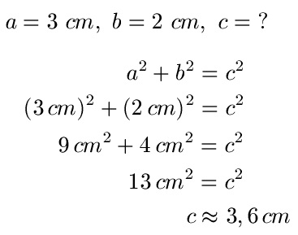

Der Satz des Pythagoras wird angewendet, um die Seiten eines rechtwinklichen Dreiecks zu berechnen.
Das rechtwinklige Dreieck besitzt 2 Kateten diese heissen in diesem Fall (Katete a, Katete b)
und eine Hypotenuse. Die Hypotenuse ist die längste der 3 Seiten.

(geben sie 2 der 3 Variablen ein)
Die fehlende Seite beträgt:
Wenn eines der 3 Felder leer gelassen wird, werden die 2 anderen Werte benutzt um das dritte auszurechnen.
Das funktioniert so, indem geschaut wird ob eine Katete fehlt oder die Hypotenuse. Bei der Hypothenuse ist es etwas
einfacher,
da dort addiert werden kann. Wurzel(Katete a^2 + Katete b^2) = Hypotenuse.
Wenn aber jedoch eines der Kateten gesucht ist, wird die vorhandene Katete von der Hypotenuse subtrahiert.
Wurzel(Hypotenuse^2 - bestehende Katete^2) = gesuchte Katete